Finding and removing malware from windows in minimal steps using sysinternals suite
Hello, there!
Did your system ever get affected with malwares?
Probably yes!, maybe that’s why you are reading this article. And If your answer is no! Then maybe you never tried to find answers for questions like whats wrong with your system?, why it is behaving different? and why is it slow from few days?. But you may argue that you never face these issues because you always use antivirus software.
Well, you are partially right there. Antivirus can save you from malwares most of the time(atleast from those malwares from which most users get affected) but not always. And what if you don’t have any antivirus installed. Did you ever think that you can also manually remove common malwares with very little technical knowledge.
You must have guessed that I am gonna teach you that in this post. Yes! but in some extent. This post is more about my recent experience with malware’s on my friends computer and how did I removed them. But don’t close this tab after reading this because you can use the same procedure to detect the most malwares affecting your system. Also in future articles I will explain the In-depth procedure for malware detection that you can use. But for now lets look at minimal things that you can do.
Here starts the story
Recently one of my friend complained me about his windows 8 working slow, power consumption get high from few days. Also the major issue he was facing is whenever he try to browse any site in mozilla firefox he gets error about invalid certificate and connection is not secure.
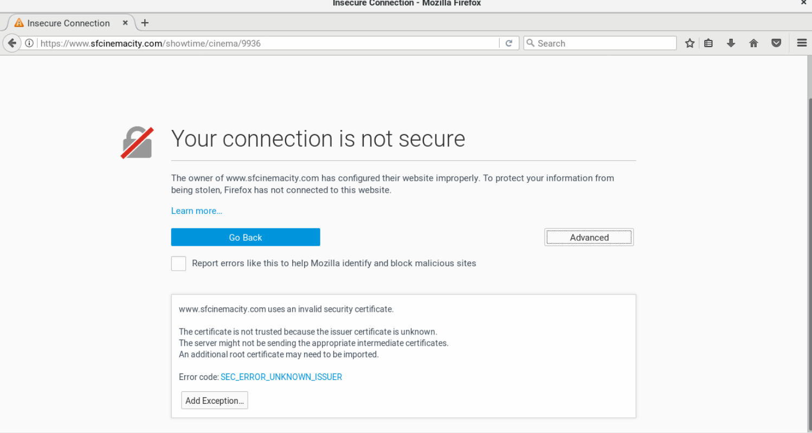
By looking at these issues I knew that something must be fishy going on in his system but I got no idea what may have causing these issues. It maybe some program that he have installed causing that or maybe some misconfiguration.
So, my first priroty is to fix the browser issue. Other issues are something that windows users always complain about, so I try to ignore them.
I have the seen the browser issue multiple times so I was sure it must be causing due to change in proxy setting by some program(to monitor the traffic) or because of antivirus itself. So, first thing I tried is looking for current proxy setting in firefox. For that I click on right top icon on firefox and then on options from the drop down.
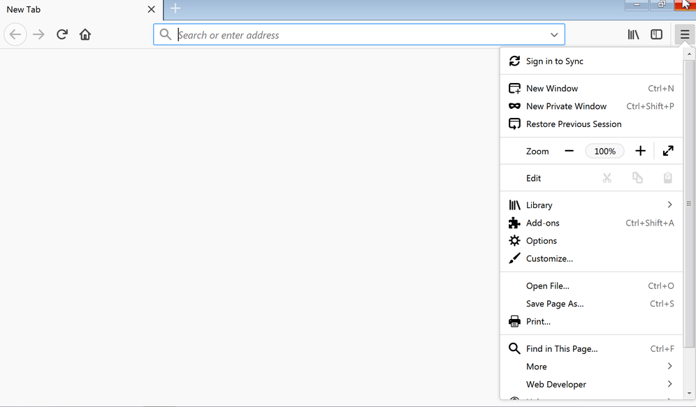
In General tab at the bottom I found network proxy option.
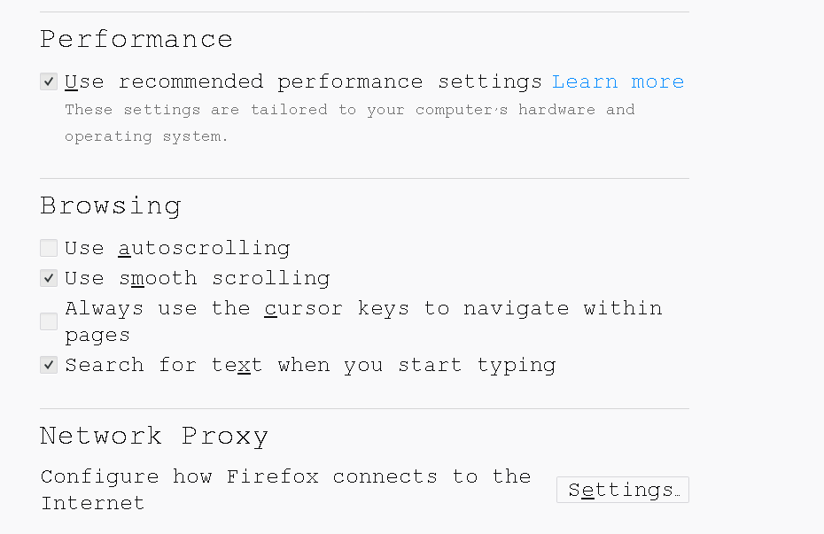
I was expecting it to set to some Manual proxy configuration but it is set correctly to auto detect proxy settings.
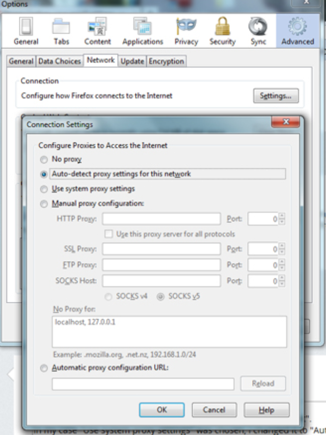
Next step I did is to look for antivirus in his system which generally change the proxy settings. But my friend told he doesn’t have any antivirus program installed on his system(which I think maybe the root cause of problem.). So, I look for some installed program in hope that I will find some malicious program and will uninstall that. But there was nothing installed that I can tell is fishy.
So, after little more struggle I decide to use sysinternals suite to look deeper into the problem.
What are sysinternals suite?
Sysinternals suite(link) consist of utilities/tools to help you manage, troubleshoot and diagnose your Windows systems and applications. Some most common tools are process explorer, registry editor etc.
Now, first step I have done after downloading the tools is extracting the zip and starting the process explorer(inside the folder procexp). It show me all the running processes in the system.
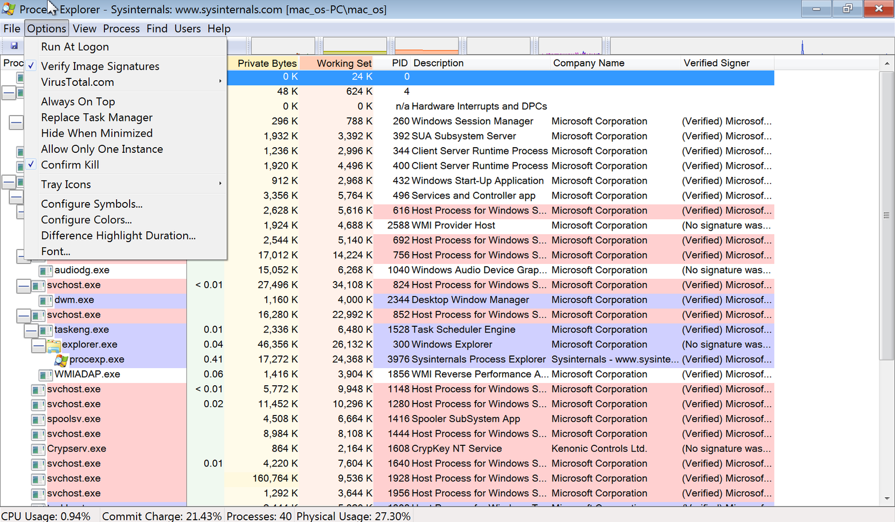
I click on options on the top bar and check the Verify image signature entry so that I can neglect the windows verified(code-signed) programs and only concentrate on not verified programs.
Well, I have found two interesting non verified services running in the system.
One is isMiner program running and using lots of cpu(You must have guessed its working just by looking at its name).
Other is some random named program “2e4e333…." (which looks like some hash value). It also got a little suspicious icon which takes my attention.
Before going further on any discussion I must need to know for sure that these are the program causing trouble. One thing I am sure about is if they are any type of malware then they must try to persist themselves in the system. For that windows applications add autorun entries key on the registry. So I started the Autoruns tool present in sysinternals toolset. Then I try to find out the entries for both of these programs and successfully found that somewhere down.
There is a tick box before their names, showing if these autorun is enabled or not. So, I disable both of them.
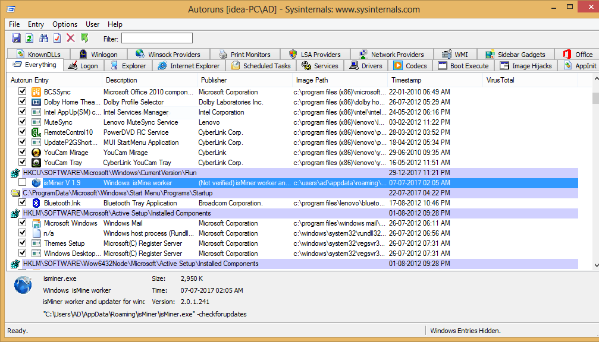
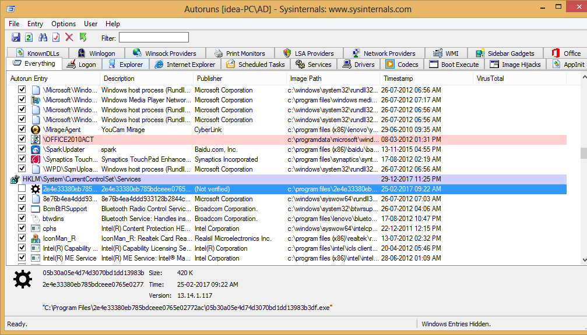
Note: I can also delete these entries by right click→ select Delete, but it is recommended that you just turn off these autoruns because the program running for these entries maybe get triggered when those registry keys are deleted and it add them back again.Hope that make sense!
You can easily argue for now that these program maybe some legitimate programs used by some other process. So, I finally need to confirm that these are the malwares running there.
For that I right click on both entries and select ‘jump to image’. It takes me to the location of executable saved for these programs. One of them is at User→ AppData→ Roaming (which is a common place malware put their executable for autorun on system startup)
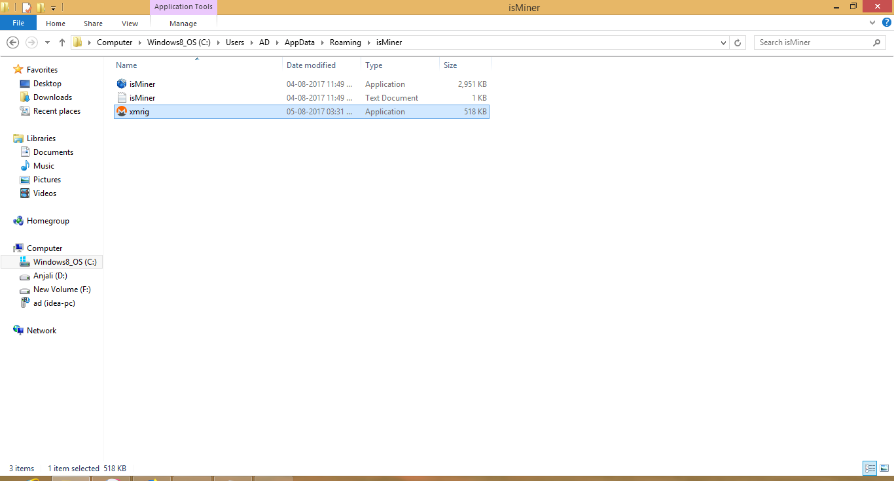
other was inside C:\→ Program files.
I copy all the executables and place them inside some known location. Next step is to check if these program are really dangerous or not. For that I went to a website called virustotal.com. VirusTotal(owned by google) analyze suspicious files and URLs to detect types of malware including viruses, worms, and trojans.
First I uploaded isMiner.exe.
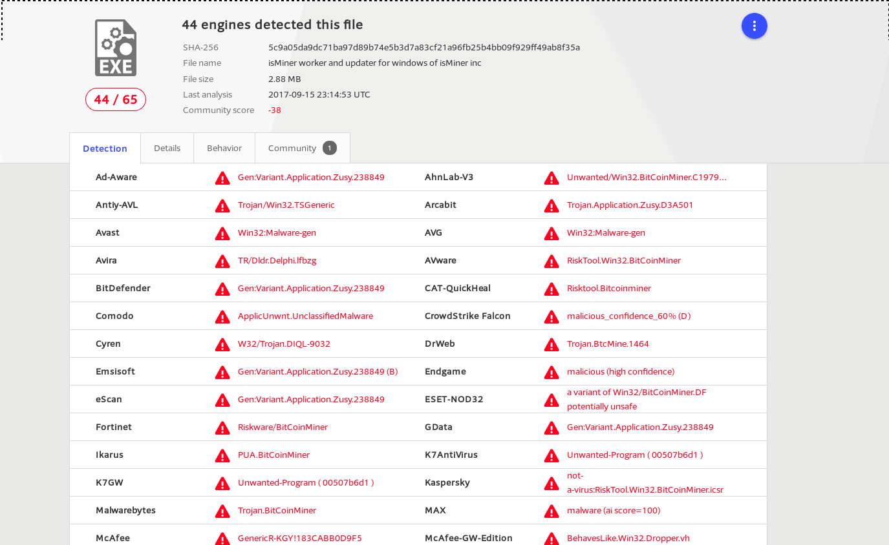
You can see that it is detected by 44/65 antivirus programs. You can easy guess that it is a Bitcoin miner program that uses your cpu power to mine bitcoins. It is also the cause of high power consumption by your system and even slow performance sometimes.
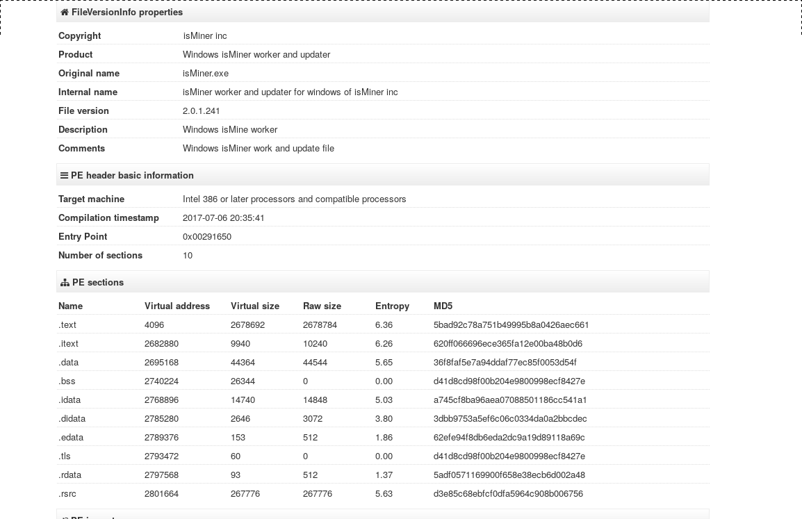
There is another file named xmrig.exe there which is the file generated by isMiner.exe for its working.
Analyzing that shows detection ratio 47/67.
Now lets upload the another suspicious program.
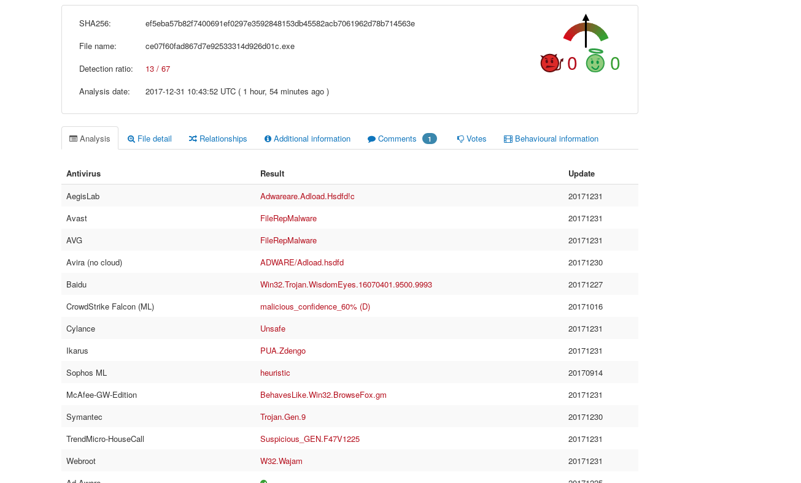
Well, it got detected by 13 /67 antiviruses means it is quite good at hiding itself.
With a little static analysis I was able to find out that it is a adware(also can be confirm using virustotal report). Then I run it inside a sandboxed environment and found that it show large ads banner on every browser’s page. So, the firefox error about not secure connection is causing by this program only since it monitor all the pages you browse and shows ads on them.
So It was confirmed that both of these program are the malwares affecting the system. I delete both of them(registry keys are already disabled) and restarted the system. And as you can imagine after next reboot all those issues are gone and the system became normal again.
So, thats it for this post. In future article I will show you how I reverse engineer these malware and we also look into how to use other utility in sysinternals suite to find malwares.Stay tuned!
Subscribe to Linuxed and reversed
Get the latest posts delivered right to your inbox